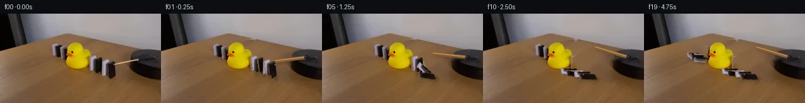

![首帧]()

Round 00
2026-11-04T23:29:32.874298+00:00像素候选变化代码 +256/−0inspection 更新
pixels fad80333124ee723 · code 80840e308bc38b38
查看本轮 generate.py 真实 diff
--- previous/generate.py +++ current/generate.py @@ -0,0 +1,256 @@ +from pathlib import Path +import math + +import cv2 +import numpy as np +from PIL import Image, ImageDraw, ImageFont + +import artifact_io + + +ROOT = Path(__file__).resolve().parent +W, H = 256, 144 + + +def polygon_mask(points, blur=0.45): + mask = np.zeros((H, W), np.uint8) + cv2.fillPoly(mask, [np.asarray(points, np.int32)], 255) + if blur: + mask = cv2.GaussianBlur(mask, (0, 0), blur) + return mask + + +def source_layer(src, points): + """A full-canvas premultiplied-looking RGBA source cutout.""" + alpha = polygon_mask(points) + return np.dstack([src, alpha]) + + +def warp_layer(layer, pivot, angle_deg=0.0, tx=0.0, ty=0.0, scale=1.0): + matrix = cv2.getRotationMatrix2D(tuple(map(float, pivot)), angle_deg, scale) + matrix[:, 2] += (tx, ty) + return cv2.warpAffine( + layer, + matrix, + (W, H), + flags=cv2.INTER_CUBIC, + borderMode=cv2.BORDER_CONSTANT, + borderValue=(0, 0, 0, 0), + ) + + +def composite(rgb, layer): + alpha = layer[:, :, 3:4].astype(np.float32) / 255.0 + out = rgb.astype(np.float32) * (1.0 - alpha) + layer[:, :, :3].astype(np.float32) * alpha + return np.clip(out + 0.5, 0, 255).astype(np.uint8) + + +def smoothstep(v): + v = np.clip(v, 0.0, 1.0) + return v * v * (3.0 - 2.0 * v) + + +def fall_angle(frame, start, duration=3.7, final=82.0): + return final * smoothstep((frame - start) / duration) + + +def add_shadow(frame, pivot, angle, length, width, opacity=0.22, tx=0, ty=0): + """Soft table shadow for a falling domino, cast down and right.""" + shadow = np.zeros((H, W), np.uint8) + a = math.radians(angle) + # The standing top vector (0,-length) rotated left; flatten its shadow on the table. + top_x = pivot[0] - math.sin(a) * length + tx + top_y = pivot[1] - math.cos(a) * length + ty + base_x, base_y = pivot[0] + tx, pivot[1] + ty + # Standing objects have compact shadows; fallen objects have long, narrow ones. + flatten = 0.36 + 0.55 * math.sin(a) + tip = (int(top_x + 4), int(base_y + (top_y - base_y) * flatten + 4)) + cv2.line(shadow, (int(base_x + 3), int(base_y + 3)), tip, 255, max(2, int(width * 0.8)), cv2.LINE_AA) + shadow = cv2.GaussianBlur(shadow, (0, 0), 2.0) + alpha = shadow.astype(np.float32)[:, :, None] / 255.0 * opacity + return np.clip(frame.astype(np.float32) * (1.0 - alpha), 0, 255).astype(np.uint8) + + +def draw_stick(frame, pivot, theta_deg, length=55): + """Render the rotating tan wooden rod behind the dominoes.""" + out = frame.copy() + theta = math.radians(theta_deg) + end = (int(round(pivot[0] + length * math.cos(theta))), + int(round(pivot[1] + length * math.sin(theta)))) + # Small soft cast shadow then a shaded two-tone rod. + overlay = np.zeros((H, W), np.uint8) + cv2.line(overlay, (pivot[0] + 2, pivot[1] + 3), (end[0] + 2, end[1] + 3), 170, 3, cv2.LINE_AA) + overlay = cv2.GaussianBlur(overlay, (0, 0), 1.2) + a = overlay[:, :, None].astype(np.float32) / 255.0 * 0.20 + out = np.clip(out.astype(np.float32) * (1.0 - a), 0, 255).astype(np.uint8) + cv2.line(out, tuple(pivot), end, (133, 92, 50), 3, cv2.LINE_AA) + cv2.line(out, (pivot[0], pivot[1] - 1), (end[0], end[1] - 1), (202, 154, 90), 1, cv2.LINE_AA) … diff truncated; 169 more lines …